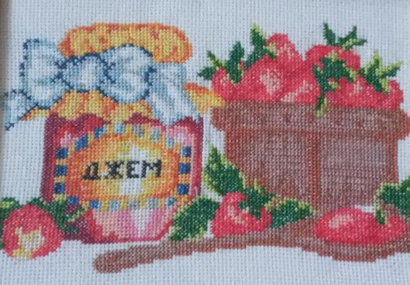

Вышитые картины – это совершенно особый вид искусства. Способов вышивания на сегодняшний день существует два: ручной и машинный. А вот техник вышивания превеликое множество, из них: вышивка крестом, гладью, шелком, лентами, золотом, бисером и так далее. Универсальность и большой интерес к вышивке заключается в сочетании возникшей в глубокой древности традиции и современных технологий в данном виде творчества. Мало что может сравниться с вышитыми картинами, которые создают особую атмосферу уюта, теплоты, комфорта в доме.